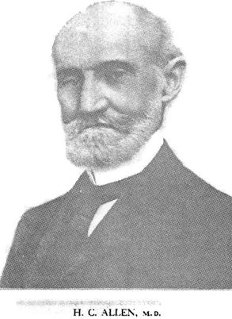

Keynotes
And Characteristics With Comparisons
of some of the Leading Remedies
of the Materia Medica
By
H. C. Allen, M. D.
Author of The Therapeutics of Fevers, Boenninghausen's Repertory Slips
and
Materia Medica of the Nosodes. Fourth Edition Philadephia
Boericke and Tafel - 1916
Preface : Fourth Edition
|
 |
What applied to the third edition applies to this,
the fourth. The facet that a fourth is demanded is convincing proof
that Dr. Allen left an indestructible monument of homeopathic materia
medica, on that is true to Homeopathy and immensely helpful to every
physician who consults it.
The Publishers.
Preface : Third Edition
The first edition of this book was only about half the size of the second, as it was prepared somewhat hastily for a special purpose, but Dr. Allen took his time to the second edition and gave the world a well rounded out and complete standard book on homeopathic materia medica. We do no mean that the first edition was faulty as to its matter, for is was used unchanged in the later edition, but it did not embrace a sufficient number of remedies. As Dr. Allen died before a third edition was needed we concluded to bring it out unchanged. It is a masterpiece of materia medica work: its symptomatology is made up of the unchanging landmarks of our remedies that are in constant use; it is, in short, a book that needs no revision.
The Publishers.
Philadephia, Pa.
Preface : Second Edition
In preparing the second edition for the press the work has been enlarged and practically rewritten. Many more remedies have been included and symptoms and comparisons extended, yet care has been taken that every symptom has been verified. The original plan has been maintained, viz., to give only those symptom-guides that mark the individuality of the remedy. that the student of materia medica may use them as landmarks to master the genius of the remedial agent.
At the suggestion of the publisher and in response to numerous enquiries a more extended symptomatology of the nosodes has been included, for these invaluable additions to our armamentarium, like the so-called tissue remedies of Schuessler, only need more extensive provings to place them in the list of polychrests.
That the student may acquire that correct pronunciation of our remedial agents an alphabetical list of remedies with the accentuation is given, for a homeopathic physician may properly be held accountable for the correct use of the terms peculiar to his profession. An index of remedies and comparisons is also included.
Preface : First Edition
The life-work of the student of homoeopathic Materia Medica is one of constant comparison an differentiation. He must compare the pathogenesis of a remedy with the recorded anamnesis of the patient; he must differentiate the apparently similar symptoms of two or more medical agents in order to select the simillinum. To enable the student or practitioner to do this correctly and rapidly he must have as a basis for comparison, some knowledge of the individuality of the remedy; something that is peculiar, uncommon, or sufficiently characteristic in the confirmed pathogenesis of a polychrest remedy that may be used as a pivotal point of comparison. It may be a so-called "keynote," a "characteristic," the "red strand of the rope," and central modality or principle as the aggravation of Bryonia, the amelioration from motion of Rhus, the furious, vicious delirium of Belladonna or the apathetic indifference of Phosphoric acid - some familiar landmark around which the symptoms may be arranged in the mind for comparison.
Something of this kind seems indispensable to enable us to intelligently and successfully use our voluminous symptomatology. Also, if we may judge from the small number of homeopathic physicians who rely on the single remedy in practice, and the almost constant demand for a "revision" of the Materia Medica, its study in the past, as well as at present, has not been altogether satisfactory to the majority.
An attempt to render the student's task less difficult, to simplify its study, to make it both interesting and useful, to place its mastery within the reach of every intelligent man or woman in the profession, is the apology for the addition of another monograph to our present works of reference.
It is all-important that the first step in the study of homeopathic therapeutics be correctly taken, for the pathway is then more direct and the view more comprehensive. The object of this work is to aid the student to master that which is guiding and characteristic in the individuality of each remedy and thus utilize more readily the symptomatology of the Homoeopathic Materia Medica, the most comprehensive and practical work for the cure of the sick ever given the medical profession. It is the result of years of study as student, practitioner and teacher, and is published at the earnest solicitation of many alumni of Hering College, with the hope that it may be of as much benefit to the beginner as it has been to the compiler.
Copyright © MEDI-T 1998